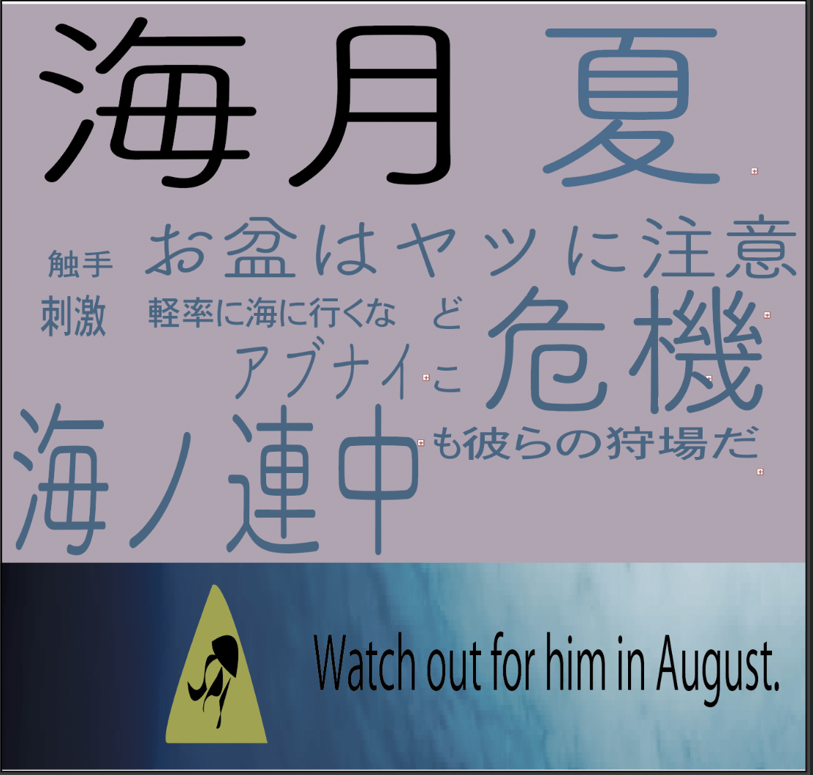

overview

金沢出身。
訓練中のwebデザイナーの卵
空と音楽、それと美味しいものが好き
Skills

基本的には不自由なく使いこなせています。

レスポンシブ化も出来ます。

プラグインなどを使ってこのサイトを作っています。

現在ポートフォリオVer2をこれで作っています。

簡単なイラストなら掛けます。

そんなに得意ではないが、軽い画像加工なら出来ます。
自作PCから配信、versionは11のinsiderprogramに参加しています。

外では基本macなのでコーディングなどはこちらが多め。beta版使ってます。
discord感覚で使えますが、botは作ったことはありません。
これの管理を実際にgitでやってます。

EC2インスタンスは理解できたが、実用には至らなかった。
ブログ運営として１年ほど使いました。
works


八月に増えるクラゲ、危ないぞというコンセプトで作りました
苦労した点は毒をどんな感じで表そうという単純なものでした
とにかく暑かったので、涼しいものをというコンセプトです
苦戦したことは基本鉛筆画を趣味で描くのですが、色を使わないので、コントラストとかどうしようと感じながら作業し
時々事業所の方に力を借りたことです
そんなに上手ではありませんが、イラストも描きます
このイラストのコンセプトは絶望した少年を描いてみようということで描きました
苦労した点は雨で濡れた肩を描くときの色に困りました
hobby


機材集め
生粋のガジェット好き
配信で使う機材や、ライフハックのために集めてます
オンラインゲーム
よくするのはドラクエXとBattlefield。
写真撮影
ふらっと外に出てみたり旅に行きたくなる人なので
それの記録に写真を撮ってます
News
- 2023/09/08
- skill欄の星表示を文字にして、実際にどこまで出来るかを書きました。
- 2023/08/07
- 作成物の欄を追加しました
- 2023/07/21
- 文の訂正とhobbyのスライドの速度の低下、使われることのないcontact-usを削除しました
- 2023/06/22
- Googleアナリティクスに対応させました
- 2023/6/13
- adobeのillustratorとphotoshopの勉強とReactの学習を始めたのとoverviewの文字を少し訂正しました。
- 2023/5/16
- hobby欄のスライダーが速かったので速度の低下、PCで画面いっぱいにした時にTwitterフィードが表示されるようにしました。
- 2023/5/8
- skill欄を星表示で見える化したのとハンバーガーメニューのスペルミスを訂正しました
- 2023/5/1
- hobby欄にslick.jsを入れてスライドショーを実装しました。
- 2023/4/27
- ハンバーガーメニューの搭載、及びレスポンシブ対応にしました
- 2023/4/4
- お問い合わせフォームをしっかり作る
- 2023/3/7
- gitおよびGitHubを使い始める
- 2023/3/7
- このサイトを作成し始める